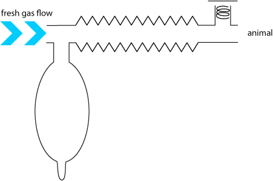
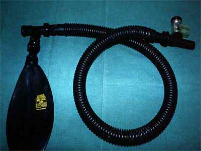
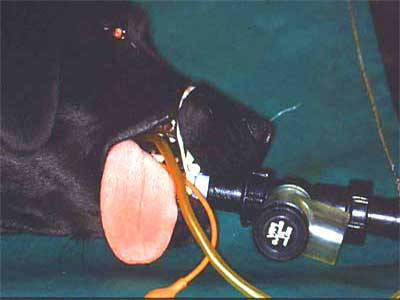
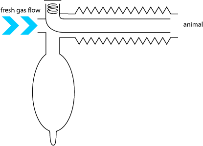
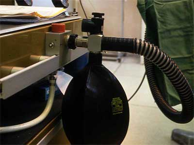
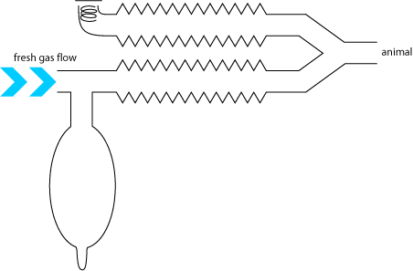
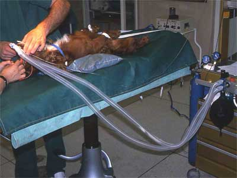
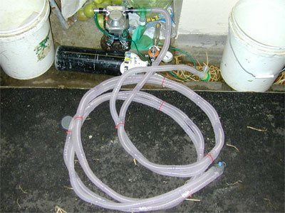

Mapleson A circuits
These circuits require a fresh gas flow of about 75mL/kg/min to prevent rebreathing.
Magill
The oldest type A circuit and very widely used in the UK until recently. Pop off valve at animal's nose can get in the way.
  
Lack
Gas efficient, but co-axial tubing can be stiff and difficult to check. Not common.
 
How it works
Parallel Lack
Gas efficient, even with long tubing for MRI, field anaesthesia, etc. Should be more commonly used.
  
How it works